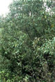

Common name in Tamil : Vellai kandai
Common name in Telugu : Gundu mada, vilava mada


Diagnostic characters
Botany & morphology
Regeneration
Reproductive biology
Ecology
Distribution
Uses
Small tree, up to 5 m tall, much branched; bark greyish-black, lenticelled; pneumatophores many. Leaves lanceolate, apex pointed, white beneath. Inflorescence long spicate with flowers in distal units. Fruits conical with pronounced beak.
Leaves simple, opposite, shortly petiolate, lanceolate, apex narrow acute or acuminate, base attenuate or decurrent, margin entire, 8 - 3 x 2 – 4 cm, dark green and shinning above, silvery papillose beneath.
Inflorescences terminal or axillary spikes, peduncles 2.5 - 3.5 cm long.
Flowers small, regular, bisexual, yellow-orange color, fragrant; calyx 5 lobed, ovate; corolla tube short, 4 lobed; stamens 4, adnate to corolla-throat, anther-cells ellipsoid; ovary 4 celled, style tapering, stigma bifid.
Fruits conical, curved, and up to 4 cm long, apex short beaked, densely tomentose.
Seeds solitary, erect, cotyledons large.
The bark dark in color, appearing grey or even black.
Stilt roots slender; pneumatophores finger-like and linked to a massive cable root system below the mud surface.
Cryptovivipary. Germination is epigeal or modified epigeal. The pericarp is finely hairy and yellow green in colour, once shed it releases a dark green viviparous seed. These buoyant seeds can be found entwined by their hypocotyl hairs in clusters on tidal mud near parent trees or often found drifted in tropical sandy beaches.
Flower visitors are insect and honeybees.
A conspicuous and important mangrove tree. Substantial trees found growing in soft mud on the gently sloping banks of estuarine rivers and as a pioneer species on newly formed mud flats near river mouths.
India to Indochina, through the Malay Archipelago to the Philippines, New Guinea, New Britain, and northern Australia. In India it occurs along the east and west coasts from Sunderbans up to Maharashtra. In Sri Lanka it occurs in south western part.
Wood is used as fuel, leaves are used for fodder and fish-food, flowers are a rich source of honey and bee-wax.
Top of the page